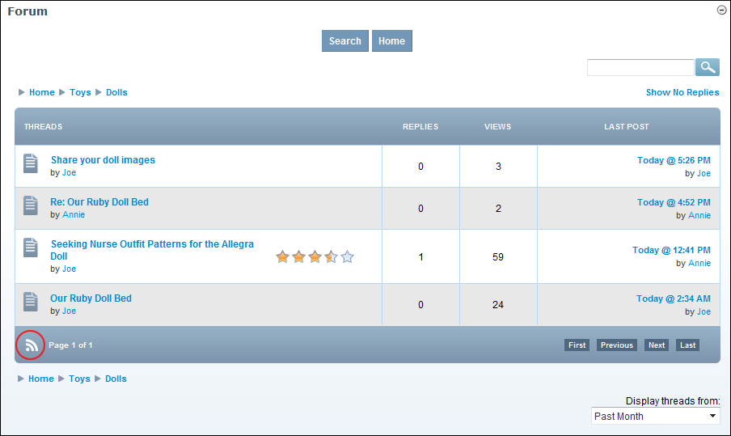
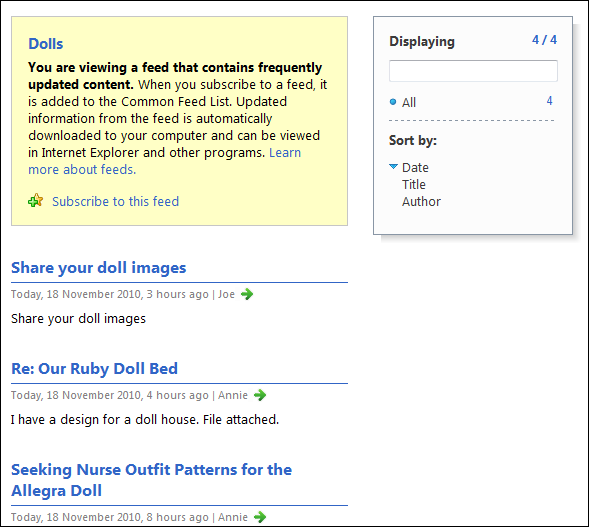

Viewing a Forum as an RSS Feed
How to view a forum as an RSS feed using the Forum module.
- Navigate to the required forum. See "Navigating to Forums & Forum Groups"

- Click the RSS
 button located at the bottom right of the module. This displays the RSS feed.
button located at the bottom right of the module. This displays the RSS feed.
